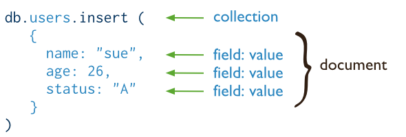

- Introduction
- 1. Node.js
-
2.
MongoDB
- 2.3. Introduction to MongoDB
- 2.4. 基本概念
- 2.5. Installation
- 2.6. 开始使用
-
2.7.
MongoDB CRUD 操作基础
- 2.7.8. Read Operations
- 2.7.9. Write Operations
-
2.8.
MongoDB CRUD 操作进阶
- 2.8.9. 文档插入
- 2.8.10. 文档查询
- 2.8.11. 文档修改
- 2.8.12. 文档删除
- 2.8.13. Limit Fields to Return from a Query
- 2.8.14. Limit Number of Elements in an Array after an Update
- 2.8.15. Iterate a Cursor in the mongo Shell
- 2.8.16. 查询性能分析
- 2.8.17. 执行两步提交
- 2.8.18. Update Document if Current
- 2.8.19. Create Tailable Cursor
- 2.8.20. Create an Auto-Incrementing Sequence Field
- 2.9. 数据模型
-
2.10.
MongoDb 管理
- 2.10.11. mongo 进程管理
- 2.10.12. 数据库操作的性能分析
- 2.10.13. 数据库备份与恢复
- 2.10.14. 创建用户管理员
- 2.10.15. 创建数据库用户
- 2.10.16. 创建数据库角色
- 2.10.17. 为用户指定角色
- 2.10.18. 创建数据库角色
- 2.10.19. 为用户指定角色
- 2.10.20. 移除用户的角色
- 2.10.21. 验证用户权限
- 2.10.22. 查看角色信息
- 2.10.23. 修改用户密码和自定义数据
- 2.10.24. 启用身份认证
- 2.11. 聚合
-
3. JavaScript
- 3.4. JavaScript概述
- 3.5. 词法结构
- 3.6. 类型、值和变量
- 3.7. 表达式和运算符
-
3.8. 语句
- 3.8.9. 表达式语句
- 3.8.10. 复合语句
- 3.8.11. if 语句
- 3.8.12. switch 语句
- 3.8.13. for 语句
- 3.8.14. for in 语句
- 3.8.15. while 语句
- 3.8.16. do/while 语句
- 3.8.17. 标签语句
- 3.8.18. var 语句
- 3.8.19. function 语句
- 3.8.20. 异常语句
- 3.8.21. with 语句
- 3.9. 对象和数组
- 3.10. 函数
- 3.11. 类和模块
- 3.12. 正则表达式
- 3.13. 客户端JavaScript
-
3.14.
使用 JavaScripting
- 3.14.15. Introduction 任务
- 3.14.16. Variables
- 3.14.17. Strings
- 3.14.18. String Length
- 3.14.19. Revising Strings
- 3.14.20. Numbers
- 3.14.21. Rounding Numbers
- 3.14.22. Number To String
- 3.14.23. If Statement
- 3.14.24. For Loop
- 3.14.25. Arrays
- 3.14.26. Array Filtering
- 3.14.27. Looping Through Arrays
- 3.14.28. Objects
- 3.14.29. Object Properties
- 3.14.30. Functions
- 3.14.31. [Function Arguments]
- 4. jQuery
- Published with GitBook
写操作概述
- 写操作指的是创建或修改数据库中的数据；
- MongoDB中，写操作的目标是单个集合；
- 对于单个文档，所有写操作都是原子性的。
- 写操作分为三类：插入、更新、删除
- No insert, update, or remove can affect more than one document atomically.
- 对于更新和删除操作，你可以像查询操作一样为其指定一个筛选条件，以确定需要更新或删除的文档。
- MongoDB allows applications to determine the acceptable level of acknowledgement required of write operations.
插入
使用 db.collection.insert() 可以添加一个新文档到集合中。
下图描述了插入操作：

使用SQL的插入操作是这样的：
示例
以下操作插入一个新文档到users集合中。新的文档有name、age、status和_id四个字段，其中，_id字段必须字段，它的值可以由系统自动生成，也可以由应用程序指定。
db.users.insert(
{
name: "sue",
age: 26,
status: "A"
}
)
Insert Behavior
- 如果你没有为新文档添加
_id字段，系统将为其自动生成一个； - 如果你手动为新文档添加了
_id字段，此字段的值在当前集合中必须是唯一的
插入文档的其他方法
你可以使用 update 方法集合upsert选项添加文档。
更新
db.collection.update()用于更新已存在的文档；db.collection.update()方法接收一个查询文档，以绝对哪些文档将被更新；db.collection.update()方法同时也接收一个更新动作参数和一个选项参数，以绝对更新的行为。- 更新操作对单个文档具有原子性。
更新操作图示：

使用SQL的更新操作是这样的：
示例
db.users.update(
{ age: { $gt: 18 } },
{ $set: { status: "A" } },
{ multi: true }
)
Default Update Behavior
- 默认情况下，
update只更新一个文档，除非在选项中指明； update方法要么更新指定的字段，要么替换整个文档；- When performing update operations that increase the document size beyond the allocated space for that document, the update operation relocates the document on disk.
Update Behavior with the upsert Option
如果upsert选项为true，且给定的查询条件未能在集合中找到相应的文档，那么系统将会插入一个新的文档。
删除
db.collection.remove()用于从集合中删除文档。db.collection.remove()接收一个查询文档作为参数，以决定哪些文档需要被删除。
删除操作图示：

SQL中的删除操作：

示例
db.users.remove(
{ status: "D" }
)
Remove Behavior
默认情况下，db.collection.remove()方法删除符合查询条件的所有文档。我们也可以通过设置相应的选项来限制一次操作将删除的文档。
Isolation of Write Operations
The modification of a single document is always atomic, even if the write operation modifies multiple embedded documents within that document. No other operations are atomic.
If a write operation modifies multiple documents, the operation as a whole is not atomic, and other operations may interleave. You can, however, attempt to isolate a write operation that affects multiple documents using the isolation operator.
For more information Atomicity and Transactions.
Additional Methods
The db.collection.save() method can either update an existing document or insert a document if the document cannot be found by the _id field. See db.collection.save() for more information and examples.
MongoDB also provides methods to perform write operations in bulk. See Bulk() for more information.